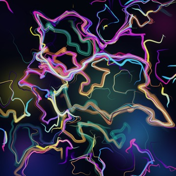
流场与波动
HDR NEW
Curl Flow
无散度旋度流体丝带
基于 2D Curl Noise 无散度旋度场与可变宽度书法样条、多纤维毛笔笔刷，配合 Oklab 渐变与 HDR 泛光。
From divergence-free curl flows, strange attractor nebulae, and bioluminescent slime molds to traditional Shan-Shui ink landscapes — a high-precision generative art exhibition in Go.
Floating-point linear-RGB accumulation buffer with 9 blend modes (Over, Add, Multiply, Screen, SoftLight) & ACES filmic tone mapping.
Bilinear sub-pixel point deposition (SplatPoint), calligraphic tapered splines, multi-filament bristle brushes, sand painting & watercolor washes.
Powered by go-colorful with Oklab perceptual interpolation, multi-stop gradients, and Inigo Quilez continuous cosine palettes.
Built-in Simplex, Ridged multifractal, 2D divergence-free Curl flow fields, Worley cellular noise, and exact Delaunay/Voronoi tessellations.

基于 2D Curl Noise 无散度旋度场与可变宽度书法样条、多纤维毛笔笔刷，配合 Oklab 渐变与 HDR 泛光。
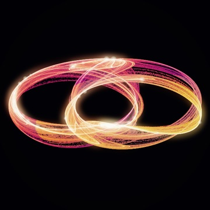
150 万次 Clifford 混沌吸引子亚像素双线性沉积，结合 99.8% 分位数对数色调映射与星团高光。
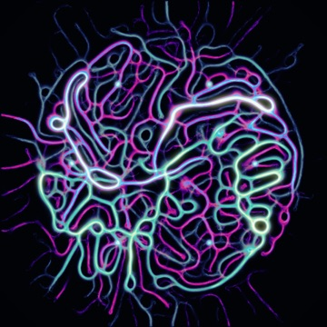
4.5 万个三触角趋化性黏菌智能体在双种群信息素场中自组织演化出的生物发光血管与菌丝网络。
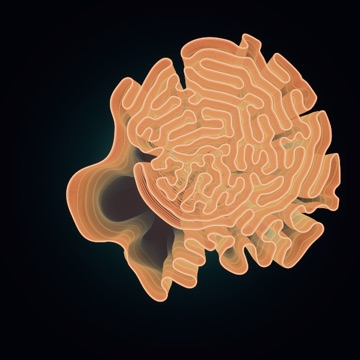
基于空间哈希加速的自回避弹性闭环不断分裂褶皱，将历史生长轮廓层叠渲染为立体珊瑚形态。
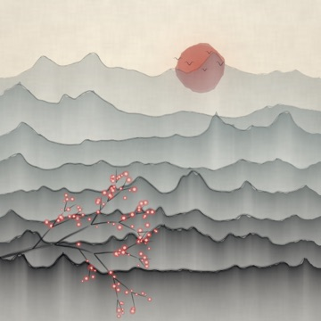
多重分形山脊、层间云雾墨色稀释、枯笔焦墨皴擦、朱砂落日飞鸟与前景递归红梅枝干。
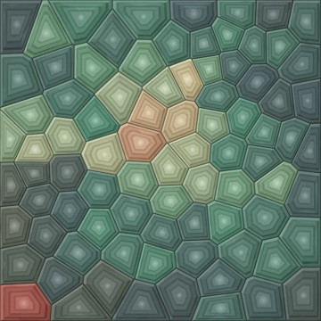
精确半平面裁剪 Voronoi 多边形并经多轮 Lloyd 质心松弛，内部绘制同心玛瑙晶带与立体切面。
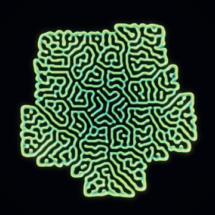
求解 Gray-Scott 反应扩散偏微分方程，重构 3D 表面法向量并施加 Blinn-Phong 高光与环境光遮蔽。
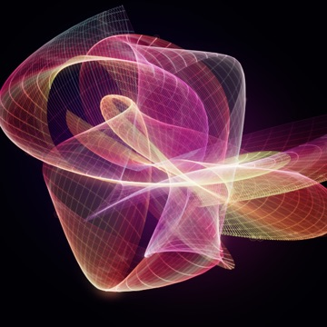
三维透视投影的多相位谐波曲面，沿法向边缘呈现真实光学焦散褶皱与亚像素沙画丝线。
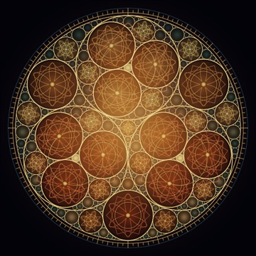
利用实数与复数笛卡尔圆定理递归求解精确相切圆分形，并在大圆内嵌套星盘刻度与旋轮花纹。
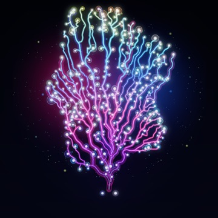
基于生长素吸引点的空间殖民分枝算法，按 Murray 定律计算主干到末梢直径衰减并点缀发光突触。
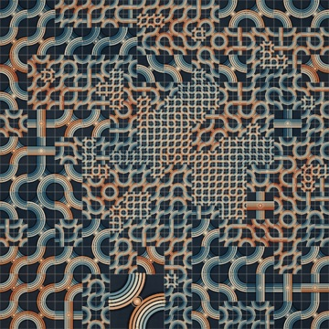
自适应四叉树细分下的多尺度 Smith Truchet 圆弧织带，具有上下穿插的 2.5D 阴影与棉纸肌理。
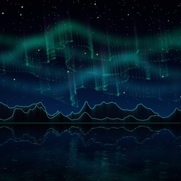
模拟地球磁力线垂直射线与高度相关的极光光谱，配合周日星轨、月光雪山剪影与湖面水波倒影。
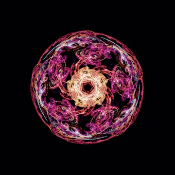
融合 Swirl、Spherical、Horseshoe、JuliaN 非线性变体与五重旋转对称的混沌博弈分形火焰。
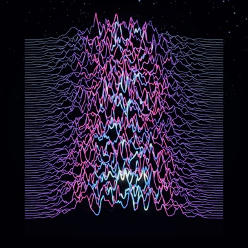
致敬 CP 1919 脉冲星波形，融合多重分形脉冲与严格画家算法地平线遮挡，脊线随高度呈现霓虹渐变。
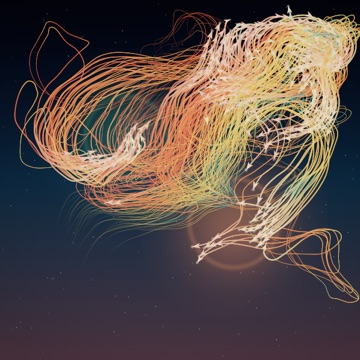
在双涡旋与 Curl 风场中模拟 240 只 Boids 分离/对齐/聚合行为，轨迹化作渐变书法丝带与折纸飞鸟。
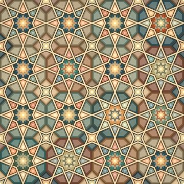
在半正定 4.8.8 密铺上实现 Hankin 接触射线星芒求交，内部填充掐丝珐琅水彩并编织上下穿插鎏金织带。
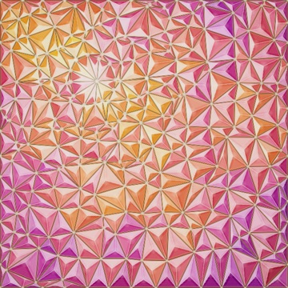
精确 Bowyer-Watson 德劳内三角剖分，每个单元拆分为三棱锥宝石切面并叠加沙画晶纹与金属铅条。
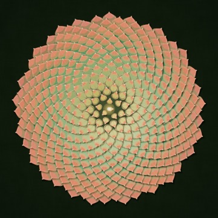
按黄金分割角 137.50776° 排布 420 片立体叶片，具有环境光遮蔽投影、叶尖珊瑚红晕染与叶脉露珠。
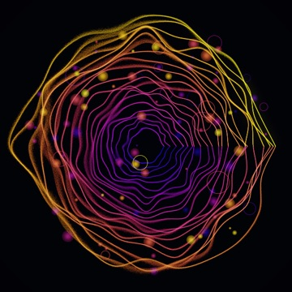
受分形噪声扰动的同心圆环，以数万次亚像素沙粒采样与径向高斯柔光散景叠加而成。
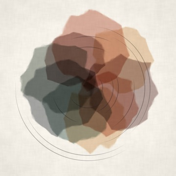
递归多边形中点位移扰动 + 22 层超低透明度 Multiply 正片叠底叠色，呈现真实水彩边缘沉淀与棉纸纹理。
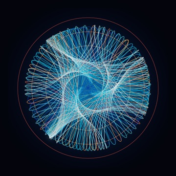
基于 tdewolff/canvas 精确几何偏移描边的内摆线旋轮花盘，采用 Screen 与 Add 发光混合。
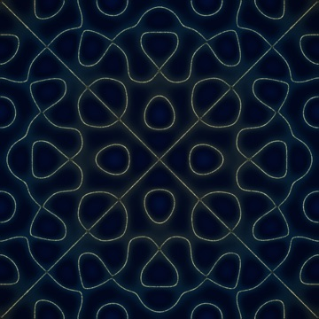
求解二维共振板驻波本征方程，模拟 9 万颗金沙微粒向零振幅节线随机振动迁移沉积。
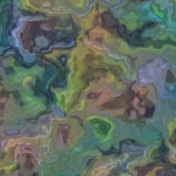
通过迭代 fbm(p + fbm(p)) 对二维坐标空间进行连续扭曲，产生绸缎与大理石般的流体纹理。
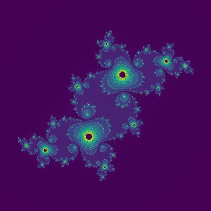
经典的复平面迭代逃逸时间分形 z = z² + c。
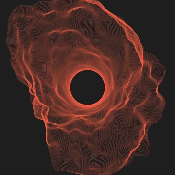
多层受噪声扰动的极坐标同心圆环，形成深邃的引力吸积盘视觉效果。
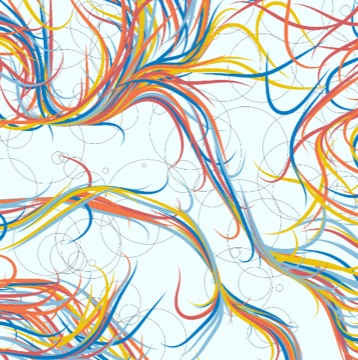
在三维噪声场中游走的千条正弦变宽彩带与随机椭圆底纹。
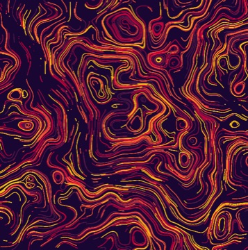
500 条粒子沿二维噪声场切线方向长距离漂移留下的绚丽轨迹。
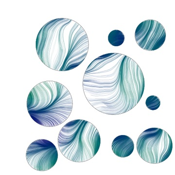
互不重叠的圆域内包裹细腻的 HSV 噪声流场丝线。
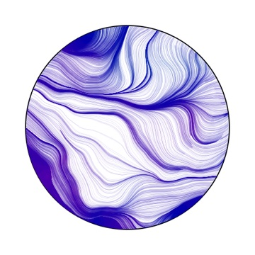
约束在中心圆域内的 2000 个噪声粒子丝滑轨迹。
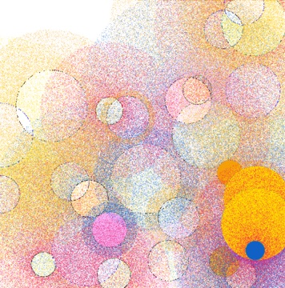
带有逆距离透明度衰减径向点云光晕的彩色圆环组合。
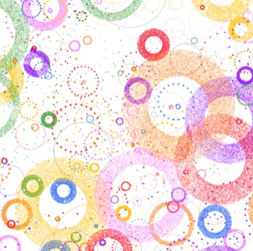
重叠半透明圆盘与散点光环构成的明快几何作品。
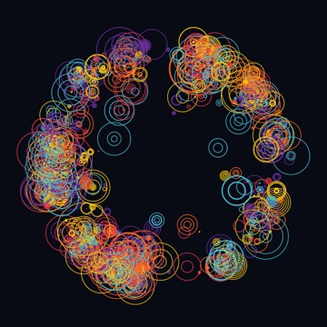
7 层深度递归生成的圆中圆分形星团结构。
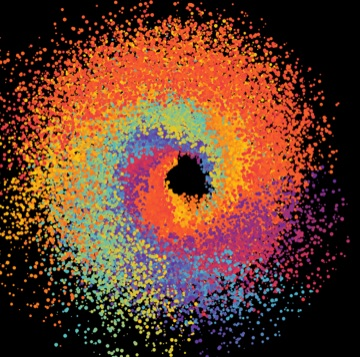
由中心向外旋转扩散的彩色圆点漩涡黑洞。
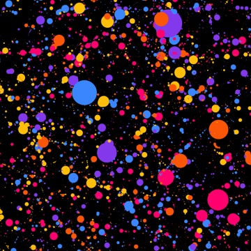
300 组旋转正弦波圆点串构成的动感波浪。
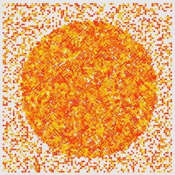
约束在圆形视野内的网格短线与圆点构成。
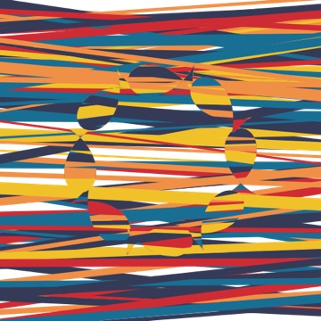
利用参数化鱼形路径裁剪横纹背景生成的海洋游鱼图。
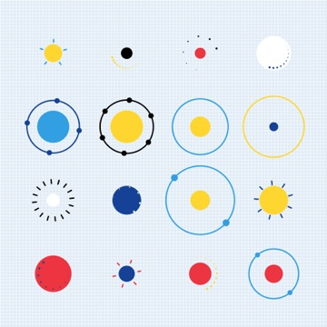
网格排列的同心圆弧与色块，带有浓郁包豪斯构成感。
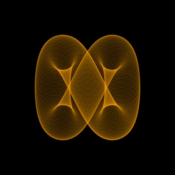
1000 次低透明度叠加旋转绘制出的发光丝网圆环。
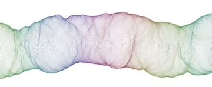
沿水平方向推进并受极坐标噪声连续形变的丝绸波纹。
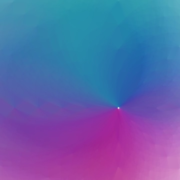
向日轮焦点汇聚的多层超低透明度丝绸光影。
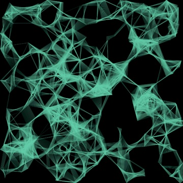
反弹圆粒子在接近时连接三角形面片，累积出丝滑烟雾。
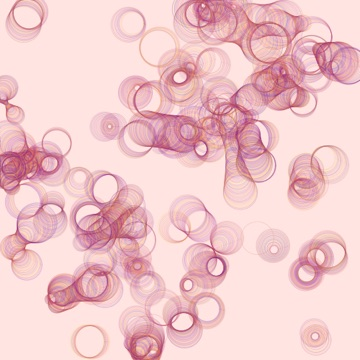
运动圆盘相互重叠时在交界处生成细腻椭圆簇。
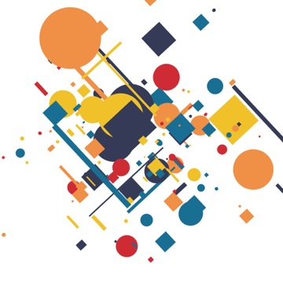
按二维高斯分布散落的旋转矩形与十字几何构成。
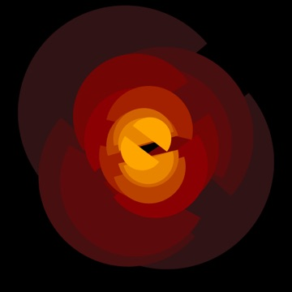
按比例衰减的对称半圆弧叠合而成的神秘图腾。
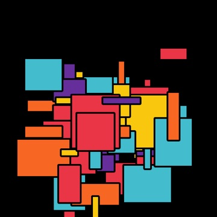
蒙德里安/波普风格的随机错位黑边彩色方格。
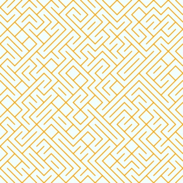
10 PRINT 风格的随机对角线迷宫密铺图案。
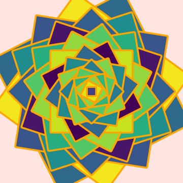
层层旋转缩小的嵌套正方形螺旋隧道。
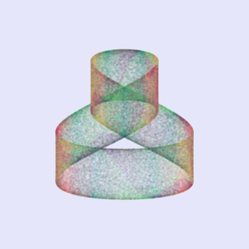
由三角参数方程驱动的连续折叠半透明点云丝带。
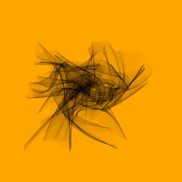
2000 条由 Perlin 噪声控制端点的三次贝塞尔曲线交织如纱线。
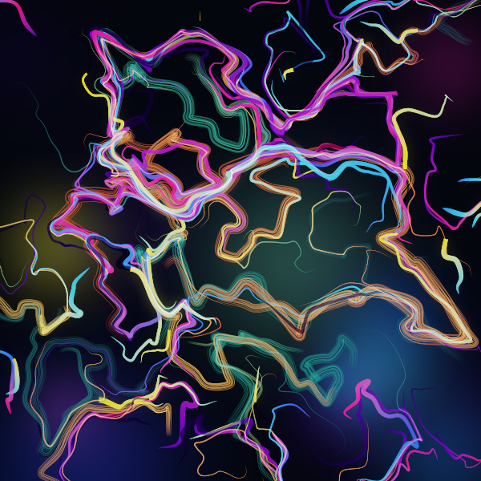